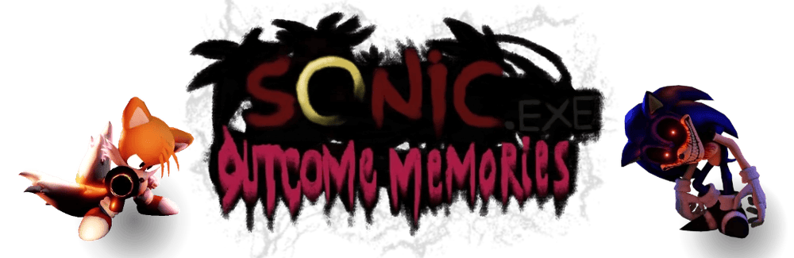
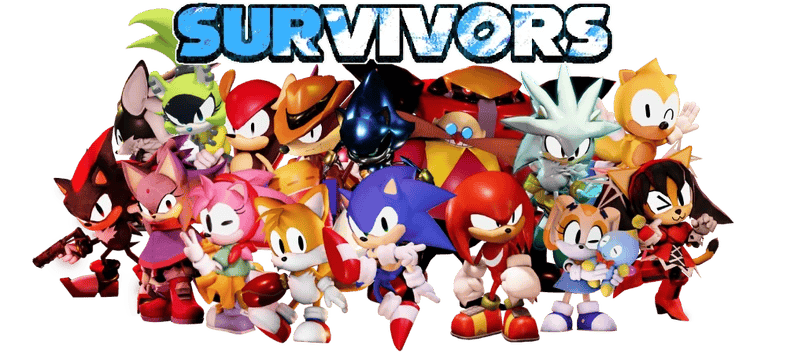
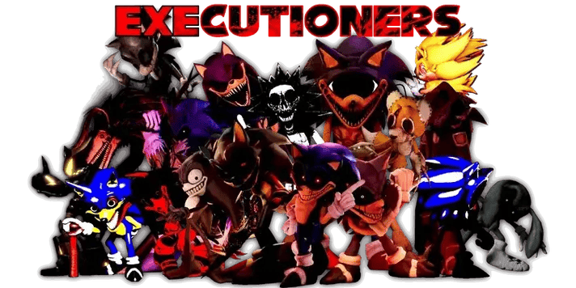

Sonic.EXE: Outcome Memories, or just OM for short, is an asymettrical horror game released in August 2025. It currently is in early development with it's first big update around the corner. It features Sonic, Tails, Knuckles, Amy, Dr. Eggman, Metal Sonic and Cream up against a supposed god that goes by X, a "faker" of Sonic, taking upon his looks. In an infinite time loop, the fun never ends.
I was supporting it before release, and when it came out I joined the second. I told my friends and they seemed interested, in which I didn't think they would. We all enjoyed the playstyle, even though some people are annoying to play against. I stuck to Knuckles immediately, with his close-range kit. I also enjoyed playing Metal Sonic and Amy. I hope I can be a good Kolossos and Knuckles player. Kolossos is also a close-range killer, with fast charges and high damage.
All you need to play this game is a ROBLOX account and an idea on how to use your character.
Game
THE LORE
The lore has vessels that are trapped inside of the bodies of Sonic's friends. They are all pulled from different worlds, or different states of time, forced to play a twisted game of cat and mouse inside corrupted places they once visited along with corrupted versions of their friends, time and time again.

The survivors are the main team of 7 in the game, consisting of the ones stated above, and some upcoming ones such as
- Blaze the Cat
- Silver the Hedgehog
- E-123 Omega
- Shadow the Hedgehog
- Rouge the Bat
- Surge the Tenrec
- Mighty the Armadillo
- Ray the Flying Squirrel
- Infinite the Jackal
- Honey the Cat
- Vector the Crocodile
- Espio the Chameleon
- Charmy Bee
- Fang the Sniper
- Sally Acorn
Exclusively, the roster also includes Sans, Neo Metal Sonic, Baldi, Frisk, and Clover. They all consist of different movesets to fend off against the executioner. Speaking of,

The executioners, or, EXEs for short, are the main killers of the game, the ones that make the game interesting. Tormentors, fakers, gods, some just evil for the fun of it. The roster consists of
- 2011X
- Lord X
- 2017X
- Kolossos
- Tripwire
- Fleetway Super Sonic
- GenesisX
- No More Innocence
- EXE
- Furnace & Starved
- IMPERFECT
- The ALLFATHER
- Suture
- Alucard
- Sonic.EYX
- M5YTCrimson X
- Korin!X
- Looney
- END
- Rewrite
Exclusively, it includes V1, Chara, and BEAR5. They all include different playstyles and ways to win the match. Either stealth, head-on attacks, or surprising the survivors. Even if they look similar to Sonic, they are all different in some way.